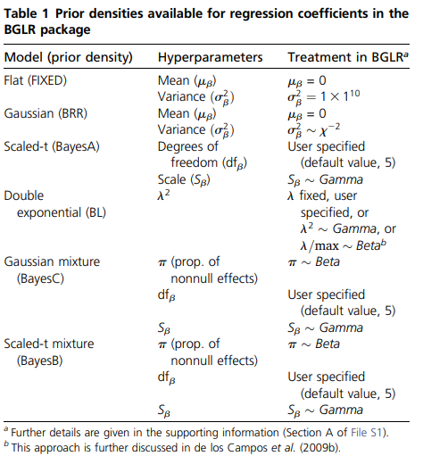
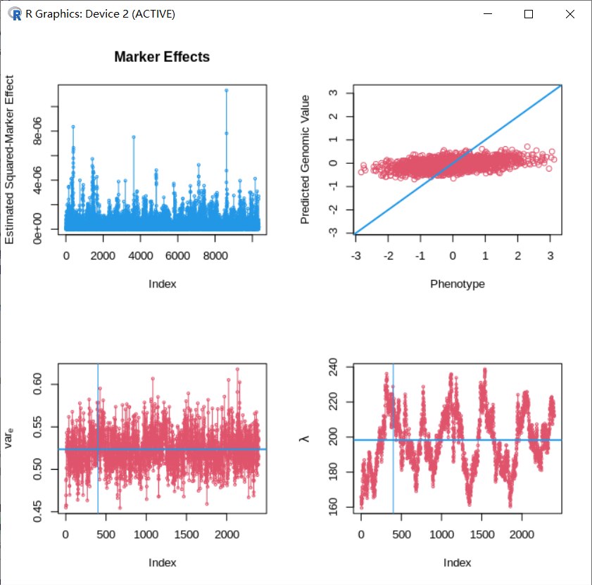
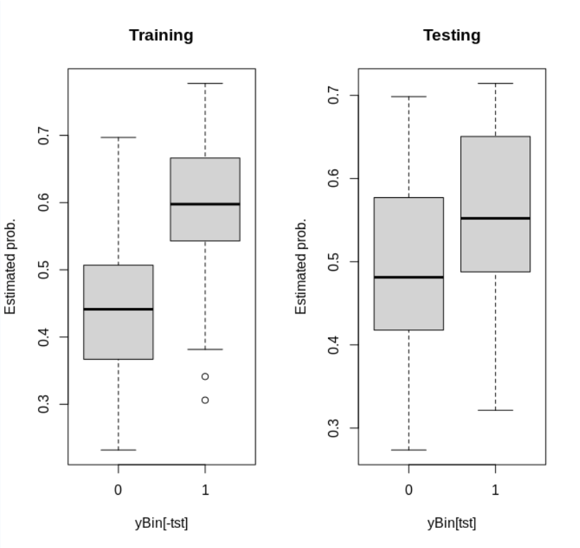
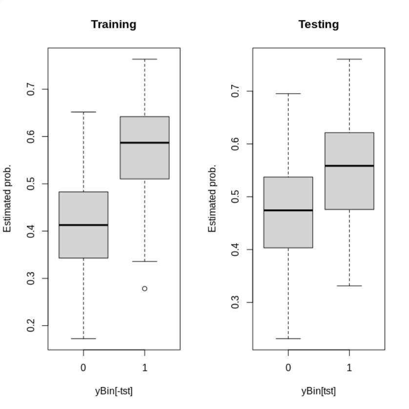

<!DOCTYPE html>


<html lang="zh-CN">


<head>
  <meta name="baidu-site-verification" content="codeva-NSg7ynviLa" />
  <meta charset="utf-8" />
    
  <meta name="viewport" content="width=device-width, initial-scale=1, maximum-scale=1" />
  <title>
    R包-BGLR |  
  </title>
  <meta name="generator" content="hexo-theme-ayer">
  
  <link rel="shortcut icon" href="/images/mojie.jpg" />
  
  
<link rel="stylesheet" href="/dist/main.css">

  <link rel="stylesheet" href="https://cdn.jsdelivr.net/gh/Shen-Yu/cdn/css/remixicon.min.css">
  
<link rel="stylesheet" href="/css/custom.css">

  
  <script src="https://cdn.jsdelivr.net/npm/pace-js@1.0.2/pace.min.js"></script>
  
  

  

<link rel="alternate" href="/atom.xml" title="null" type="application/atom+xml">
</head>

</html>

<body>
  <div id="app">
    
      
    <main class="content on">
      <section class="outer">
  <article
  id="post-R包-BGLR"
  class="article article-type-post"
  itemscope
  itemprop="blogPost"
  data-scroll-reveal
>
  <div class="article-inner">
    
    <header class="article-header">
       
<h1 class="article-title sea-center" style="border-left:0" itemprop="name">
  R包-BGLR
</h1>
 

    </header>
     
    <div class="article-meta">
      <a href="/posts/d4668321/" class="article-date">
  <time datetime="2023-05-10T03:45:39.000Z" itemprop="datePublished">2023-05-10</time>
</a> 
  <div class="article-category">
    <a class="article-category-link" href="/categories/%E6%95%B0%E6%8D%AE%E5%88%86%E6%9E%90/">数据分析</a> / <a class="article-category-link" href="/categories/%E6%95%B0%E6%8D%AE%E5%88%86%E6%9E%90/R/">R</a>
  </div>
  
<div class="word_count">
    <span class="post-time">
        <span class="post-meta-item-icon">
            <i class="ri-quill-pen-line"></i>
            <span class="post-meta-item-text"> 字数统计:</span>
            <span class="post-count">1.8k</span>
        </span>
    </span>

    <span class="post-time">
        &nbsp; | &nbsp;
        <span class="post-meta-item-icon">
            <i class="ri-book-open-line"></i>
            <span class="post-meta-item-text"> 阅读时长≈</span>
            <span class="post-count">8 分钟</span>
        </span>
    </span>
</div>
 
    </div>
      
    <div class="tocbot"></div>


  
    <div class="article-entry" itemprop="articleBody">
       
  <link rel="stylesheet" type="text/css" href="https://cdn.jsdelivr.net/hint.css/2.4.1/hint.min.css"><p>BGLR 是一个使用贝叶斯方法进行基因组选择的一个 R 包。</p>
<span id="more"></span>
<h1>支持的表型</h1>
<ul>
<li>连续性状（censored or not）</li>
<li>分类性状：二分类（标记为01或者12），或者有序多分类（标记为 1到 n ）</li>
</ul>
<p>表型可以有缺失，但是自变量不能有缺失。</p>
<h1>支持的模型</h1>
<p>支持的回归模型如下，这里 <code>Flat</code> 就是固定因子，</p>
<p></p>
<h1>函数参数</h1>
<p>使用 BGLR 函数具有以下参数，其中除了表型向量  其余参数具有默认值。</p>
<figure class="highlight r"><table><tr><td class="gutter"><pre><span class="line">1</span><br><span class="line">2</span><br><span class="line">3</span><br><span class="line">4</span><br></pre></td><td class="code"><pre><span class="line">BGLR(y, response_type = <span class="string">&quot;gaussian&quot;</span>, a=<span class="literal">NULL</span>, b=<span class="literal">NULL</span>,ETA = <span class="literal">NULL</span>, nIter = <span class="number">1500</span>,</span><br><span class="line">burnIn = <span class="number">500</span>, thin = <span class="number">5</span>, saveAt = <span class="string">&quot;&quot;</span>, S0 = <span class="literal">NULL</span>,</span><br><span class="line">df0 =<span class="number">5</span>, R2 = <span class="number">0.5</span>, weights = <span class="literal">NULL</span>,</span><br><span class="line">verbose = <span class="literal">TRUE</span>, rmExistingFiles = <span class="literal">TRUE</span>, groups=<span class="literal">NULL</span>)</span><br></pre></td></tr></table></figure>
<p>以下是主要参数的说明：</p>
<ul>
<li>
<p><code>y</code> : 表型向量，允许有缺失 NA 。</p>
</li>
<li>
<p><code>response_type</code> : 表型向量的类型，“gaussian” 或 “ordinal”</p>
</li>
<li>
<p><code>ETA</code> : 一个双层列表(list)，用于指定自变量，默认是只有截距，具体用法见下面的例子。</p>
<p>里面的每一个子列表表示一种类型的自变量，其中 <code>X</code> 是相应的设计矩阵（可以用 <code>model.matrix</code> 语法，见下面应用中的例子），<code>model</code> 是使用的模型（<code>FIXED</code> ，<code>BRR</code>，<code>BayesA</code>, <code>BL</code>，<code>BayesB</code>, <code>BayesC</code>）</p>
<figure class="highlight r"><table><tr><td class="gutter"><pre><span class="line">1</span><br><span class="line">2</span><br></pre></td><td class="code"><pre><span class="line">ETA=<span class="built_in">list</span>(<span class="built_in">list</span>(X=W, model=<span class="string">&quot;FIXED&quot;</span>),</span><br><span class="line"><span class="built_in">list</span>(X=Z,model=<span class="string">&quot;BL&quot;</span>)),</span><br></pre></td></tr></table></figure>
</li>
<li>
<p><code>nIter,burnIn, thin</code>:  (integer) the number of iterations, burn-in and thinning .</p>
</li>
<li>
<p><code>saveAt</code> : 字符串，输出文件前缀。</p>
</li>
</ul>
<h1>输出</h1>
<p>BGLR 函数会返回一个列表，其中有后验均值估计值及其标准误估计值，其元素包括:</p>
<ul>
<li><code>y</code> ：表型</li>
<li><code>whichNa</code> ：y 中缺失元素的索引</li>
<li><code>varE</code> 和  <code>SD.varE</code> ： 残差及其标准误</li>
<li><code>fit</code> ：模型拟合情况</li>
</ul>
<p>同时也会输出一些文件，为某些数值的采样结果，用于用户评估收敛情况。举例而言，<code>mu.dat</code> 就是截距的采样结果。</p>
<h1>应用举例</h1>
<p>BGLR 自带了两个数据集（小鼠和小麦）</p>
<ul>
<li>小鼠数据中包含 1814 个个体， 10346 个 SNP</li>
<li>小麦数据中包含 599 个个体</li>
</ul>
<h2 id="连续表型">连续表型</h2>
<p>使用小鼠数据，其模型为</p>
<p style=""></p><p>其中：</p>
<ul>
<li> 为性别和窝大小的效应，为固定因子</li>
<li> 为笼子的效应，视为随机因子（先验分布为正态分布）</li>
<li> 为标记的效应，先验分布为 double-exponential</li>
</ul>
<p> 为相应的设计矩阵。</p>
<p>使用 BGLR 的脚本如下，注意这里的 <code>ETA</code> 部分使用了 <code>model.matrix</code> 函数的语法来生成设计矩阵。</p>
<figure class="highlight r"><table><tr><td class="gutter"><pre><span class="line">1</span><br><span class="line">2</span><br><span class="line">3</span><br><span class="line">4</span><br><span class="line">5</span><br><span class="line">6</span><br><span class="line">7</span><br><span class="line">8</span><br><span class="line">9</span><br><span class="line">10</span><br><span class="line">11</span><br><span class="line">12</span><br><span class="line">13</span><br><span class="line">14</span><br><span class="line">15</span><br></pre></td><td class="code"><pre><span class="line"><span class="comment">#1# Loading and preparing the input data</span></span><br><span class="line">library(BGLR); data(mice);</span><br><span class="line">Y&lt;-mice.pheno; X&lt;-mice.X; A=mice.A;</span><br><span class="line">y&lt;-Y$Obesity.BMI; y&lt;-(y-mean(y))/sd(y)</span><br><span class="line"></span><br><span class="line"><span class="comment">#2# Setting the linear predictor</span></span><br><span class="line">ETA&lt;-<span class="built_in">list</span>( <span class="built_in">list</span>(~factor(GENDER)+factor(Litter),</span><br><span class="line">data=Y,model=<span class="string">&#x27;FIXED&#x27;</span>),</span><br><span class="line"><span class="built_in">list</span>(~factor(cage),data=Y, model=<span class="string">&#x27;BRR&#x27;</span>),</span><br><span class="line"><span class="built_in">list</span>(X=X, model=<span class="string">&#x27;BL&#x27;</span>)</span><br><span class="line">)</span><br><span class="line"></span><br><span class="line"><span class="comment">#3# Fitting the model</span></span><br><span class="line">fm&lt;-BGLR(y=y,ETA=ETA, nIter=<span class="number">12000</span>, burnIn=<span class="number">2000</span>)</span><br><span class="line">save(fm,file=<span class="string">&#x27;fm.rda&#x27;</span>)</span><br></pre></td></tr></table></figure>
<p>这里基因型数据就是一个矩阵，一行是一个样本（与 <code>y</code> 保持一致），一列是一个位点（基因型为 012，缺失用该列均值填充）</p>
<figure class="highlight r"><table><tr><td class="gutter"><pre><span class="line">1</span><br><span class="line">2</span><br><span class="line">3</span><br><span class="line">4</span><br><span class="line">5</span><br><span class="line">6</span><br><span class="line">7</span><br></pre></td><td class="code"><pre><span class="line">&gt; X[<span class="number">0</span>:<span class="number">5</span>, <span class="number">0</span>:<span class="number">5</span>]</span><br><span class="line">           rs3683945_G rs3707673_G rs6269442_G rs6336442_G rs13475700_A</span><br><span class="line">A048005080           <span class="number">1</span>           <span class="number">1</span>           <span class="number">1</span>           <span class="number">1</span>            <span class="number">0</span></span><br><span class="line">A048006063           <span class="number">1</span>           <span class="number">1</span>           <span class="number">2</span>           <span class="number">1</span>            <span class="number">1</span></span><br><span class="line">A048006555           <span class="number">2</span>           <span class="number">0</span>           <span class="number">2</span>           <span class="number">2</span>            <span class="number">0</span></span><br><span class="line">A048007096           <span class="number">1</span>           <span class="number">1</span>           <span class="number">1</span>           <span class="number">1</span>            <span class="number">1</span></span><br><span class="line">A048010273           <span class="number">2</span>           <span class="number">0</span>           <span class="number">2</span>           <span class="number">2</span>            <span class="number">0</span></span><br></pre></td></tr></table></figure>
<p>然后我们可以从输出的列表中提取结果，其中</p>
<ul>
<li><code>#1#</code> 部分是提取所有位点的效应估计值及其标准误，这里因为标记效应是第 3 个自变量，因此使用 <code>fm$ETA[[3]]</code> 。</li>
<li><code>#2#</code> 部分是个体的基因型值（所有位点加性效应的总和）与表型的散点图。</li>
<li><code>#3#</code> 部分是提取模型的拟合情况（DIC）和残差</li>
<li><code>#4#</code> 部分是提取后验分布的采样结果。</li>
</ul>
<figure class="highlight r"><table><tr><td class="gutter"><pre><span class="line">1</span><br><span class="line">2</span><br><span class="line">3</span><br><span class="line">4</span><br><span class="line">5</span><br><span class="line">6</span><br><span class="line">7</span><br><span class="line">8</span><br><span class="line">9</span><br><span class="line">10</span><br><span class="line">11</span><br><span class="line">12</span><br><span class="line">13</span><br><span class="line">14</span><br><span class="line">15</span><br><span class="line">16</span><br><span class="line">17</span><br><span class="line">18</span><br><span class="line">19</span><br><span class="line">20</span><br><span class="line">21</span><br><span class="line">22</span><br><span class="line">23</span><br><span class="line">24</span><br><span class="line">25</span><br><span class="line">26</span><br><span class="line">27</span><br><span class="line">28</span><br><span class="line">29</span><br><span class="line">30</span><br><span class="line">31</span><br><span class="line">32</span><br><span class="line">33</span><br><span class="line">34</span><br><span class="line">35</span><br><span class="line">36</span><br></pre></td><td class="code"><pre><span class="line"><span class="comment">#1# Estimated Marker Effects &amp; posterior SDs</span></span><br><span class="line">par(mfrow=<span class="built_in">c</span>(<span class="number">2</span>,<span class="number">2</span>))</span><br><span class="line">bHat&lt;- fm$ETA[[<span class="number">3</span>]]$b</span><br><span class="line">SD.bHat&lt;- fm$ETA[[<span class="number">3</span>]]$SD.b</span><br><span class="line">plot(bHat^<span class="number">2</span>, ylab=<span class="string">&#x27;Estimated Squared-Marker Effect&#x27;</span>,</span><br><span class="line">type=<span class="string">&#x27;o&#x27;</span>,cex=<span class="number">.5</span>,col=<span class="number">4</span>,main=<span class="string">&#x27;Marker Effects&#x27;</span>)</span><br><span class="line"></span><br><span class="line"><span class="comment">#2# Predictions</span></span><br><span class="line"><span class="comment"># Total prediction</span></span><br><span class="line"><span class="comment"># yHat&lt;-fm$yHat</span></span><br><span class="line"><span class="comment"># tmp&lt;-range(c(y,yHat))</span></span><br><span class="line"><span class="comment"># plot(yHat~y,xlab=&#x27;Observed&#x27;,ylab=&#x27;Predicted&#x27;,col=2,</span></span><br><span class="line"><span class="comment"># xlim=tmp,ylim=tmp); abline(a=0,b=1,col=4,lwd=2)</span></span><br><span class="line"><span class="comment"># Just the genomic part</span></span><br><span class="line">gHat&lt;-X%*%fm$ETA[[<span class="number">3</span>]]$b</span><br><span class="line">tmp&lt;-<span class="built_in">range</span>(<span class="built_in">c</span>(y,gHat))</span><br><span class="line">plot(gHat~y,xlab=<span class="string">&#x27;Phenotype&#x27;</span>,</span><br><span class="line">ylab=<span class="string">&#x27;Predicted Genomic Value&#x27;</span>,col=<span class="number">2</span>,</span><br><span class="line">xlim=tmp,ylim=tmp); abline(a=<span class="number">0</span>,b=<span class="number">1</span>,col=<span class="number">4</span>,lwd=<span class="number">2</span>)</span><br><span class="line"></span><br><span class="line"><span class="comment">#3# Godness of fit and related statistics</span></span><br><span class="line">fm$fit</span><br><span class="line">fm$varE <span class="comment"># compare to var(y)</span></span><br><span class="line"></span><br><span class="line"><span class="comment">#4# Trace plots</span></span><br><span class="line">list.files()</span><br><span class="line"><span class="comment"># Residual variance</span></span><br><span class="line">varE&lt;-scan(<span class="string">&#x27;varE.dat&#x27;</span>)</span><br><span class="line">plot(varE,type=<span class="string">&#x27;o&#x27;</span>,col=<span class="number">2</span>,cex=<span class="number">.5</span>,ylab=<span class="built_in">expression</span>(var[e]));</span><br><span class="line">abline(h=fm$varE,col=<span class="number">4</span>,lwd=<span class="number">2</span>);</span><br><span class="line">abline(v=fm$burnIn/fm$thin,col=<span class="number">4</span>)</span><br><span class="line"><span class="comment"># lambda (regularization parameter of the Bayesian Lasso)</span></span><br><span class="line">lambda&lt;-scan(<span class="string">&#x27;ETA_3_lambda.dat&#x27;</span>)</span><br><span class="line">plot(lambda,type=<span class="string">&#x27;o&#x27;</span>,col=<span class="number">2</span>,cex=<span class="number">.5</span>,ylab=<span class="built_in">expression</span>(lambda));</span><br><span class="line">abline(h=fm$ETA[[<span class="number">3</span>]]$lambda,col=<span class="number">4</span>,lwd=<span class="number">2</span>);</span><br><span class="line">abline(v=fm$burnIn/fm$thin,col=<span class="number">4</span>)</span><br></pre></td></tr></table></figure>
<p>画图结果见下面，这里图3以及图4和文献中的结果不一样，文献中总共有 24000 个点，但是我得到的 ‘varE.dat’ 和 ‘ETA_3_lambda.dat’ 均只有 2400 个结果，暂时不清楚原因。</p>
<p></p>
<h2 id="分类表型">分类表型</h2>
<p>对于分类变量，我们需要设置 <code>response_type='ordinal' </code>，我们使用小麦的数据进行分析如下。</p>
<figure class="highlight r"><table><tr><td class="gutter"><pre><span class="line">1</span><br><span class="line">2</span><br><span class="line">3</span><br><span class="line">4</span><br><span class="line">5</span><br><span class="line">6</span><br><span class="line">7</span><br><span class="line">8</span><br><span class="line">9</span><br><span class="line">10</span><br><span class="line">11</span><br><span class="line">12</span><br><span class="line">13</span><br><span class="line">14</span><br><span class="line">15</span><br><span class="line">16</span><br><span class="line">17</span><br><span class="line">18</span><br><span class="line">19</span><br><span class="line">20</span><br><span class="line">21</span><br><span class="line">22</span><br><span class="line">23</span><br><span class="line">24</span><br></pre></td><td class="code"><pre><span class="line"><span class="comment">#1# Loading and preparing the input data</span></span><br><span class="line">library(BGLR); data(wheat);</span><br><span class="line">Y&lt;-wheat.Y; X&lt;-wheat.X; A&lt;-wheat.A;</span><br><span class="line">y&lt;-Y[,<span class="number">1</span>]</span><br><span class="line">tst&lt;-sample(<span class="number">1</span>:nrow(X),size=<span class="number">150</span>)</span><br><span class="line"></span><br><span class="line"><span class="comment">#2# Binary outcome</span></span><br><span class="line">yBin&lt;-ifelse(y&gt;<span class="number">0</span>,<span class="number">1</span>,<span class="number">0</span>)</span><br><span class="line">yBinNA&lt;-yBin ; yBinNA[tst]&lt;-<span class="literal">NA</span></span><br><span class="line">ETA&lt;-<span class="built_in">list</span>(<span class="built_in">list</span>(X=X,model=<span class="string">&#x27;BL&#x27;</span>))</span><br><span class="line">fmBin&lt;-BGLR(y=yBinNA,response_type=<span class="string">&#x27;ordinal&#x27;</span>, ETA=ETA,</span><br><span class="line">nIter=<span class="number">1200</span>,burnIn=<span class="number">200</span>)</span><br><span class="line">head(fmBin$probs)</span><br><span class="line">par(mfrow=<span class="built_in">c</span>(<span class="number">1</span>,<span class="number">2</span>))</span><br><span class="line">boxplot(fmBin$probs[-tst,<span class="number">2</span>]~yBin[-tst],main=<span class="string">&#x27;Training&#x27;</span>,ylab=<span class="string">&#x27;Estimated prob.&#x27;</span>)</span><br><span class="line">boxplot(fmBin$probs[tst,<span class="number">2</span>]~yBin[tst],main=<span class="string">&#x27;Testing&#x27;</span>, ylab=<span class="string">&#x27;Estimated prob.&#x27;</span>)</span><br><span class="line"></span><br><span class="line"><span class="comment">#3# Ordinal outcome</span></span><br><span class="line">yOrd&lt;-ifelse(y&lt;quantile(y,<span class="number">1</span>/<span class="number">4</span>),<span class="number">1</span>,ifelse(y&lt;quantile(y,<span class="number">3</span>/<span class="number">4</span>),<span class="number">2</span>,<span class="number">3</span>))</span><br><span class="line">yOrdNA&lt;-yOrd ; yOrdNA[tst]&lt;-<span class="literal">NA</span></span><br><span class="line">ETA&lt;-<span class="built_in">list</span>(<span class="built_in">list</span>(X=X,model=<span class="string">&#x27;BL&#x27;</span>))</span><br><span class="line">fmOrd&lt;-BGLR(y=yOrdNA,response_type=<span class="string">&#x27;ordinal&#x27;</span>, ETA=ETA,</span><br><span class="line">nIter=<span class="number">1200</span>,burnIn=<span class="number">200</span>)</span><br><span class="line">head(fmOrd$probs)</span><br></pre></td></tr></table></figure>
<p>分析过程和上面一样，输出结果中 <code>fmBin$ETA[[1]]$b</code> 为标记效应，<code>fmBin$prob</code> 给出每个样本估计表型是0或者1的概率（不清楚怎么计算的），如下</p>
<figure class="highlight r"><table><tr><td class="gutter"><pre><span class="line">1</span><br><span class="line">2</span><br><span class="line">3</span><br><span class="line">4</span><br><span class="line">5</span><br><span class="line">6</span><br><span class="line">7</span><br><span class="line">8</span><br></pre></td><td class="code"><pre><span class="line">&gt; head(fmBin$prob)</span><br><span class="line">             <span class="number">0</span>         <span class="number">1</span></span><br><span class="line">[<span class="number">1</span>,] <span class="number">0.4488623</span> <span class="number">0.5511377</span></span><br><span class="line">[<span class="number">2</span>,] <span class="number">0.6177665</span> <span class="number">0.3822335</span></span><br><span class="line">[<span class="number">3</span>,] <span class="number">0.6119654</span> <span class="number">0.3880346</span></span><br><span class="line">[<span class="number">4</span>,] <span class="number">0.3914834</span> <span class="number">0.6085166</span></span><br><span class="line">[<span class="number">5</span>,] <span class="number">0.3705525</span> <span class="number">0.6294475</span></span><br><span class="line">[<span class="number">6</span>,] <span class="number">0.4130708</span> <span class="number">0.5869292</span></span><br></pre></td></tr></table></figure>
<p>上面脚本中给出了参考群和验证群的真实表型和预测概率的箱线图，如下</p>
<p></p>
<p>我想看一下所有样本的加性效应值结果，发现它和 <code>fmBin$yHat</code> 结果是一样的，因为 <code>fmBin$mu</code> 等于 0  。</p>
<figure class="highlight r"><table><tr><td class="gutter"><pre><span class="line">1</span><br><span class="line">2</span><br><span class="line">3</span><br><span class="line">4</span><br><span class="line">5</span><br><span class="line">6</span><br><span class="line">7</span><br><span class="line">8</span><br><span class="line">9</span><br><span class="line">10</span><br><span class="line">11</span><br><span class="line">12</span><br><span class="line">13</span><br><span class="line">14</span><br></pre></td><td class="code"><pre><span class="line">&gt; gHat&lt;-X%*%fmBin$ETA[[<span class="number">1</span>]]$b</span><br><span class="line">&gt; head(gHat)</span><br><span class="line">          [,<span class="number">1</span>]</span><br><span class="line">[<span class="number">1</span>,] -<span class="number">1.359382</span></span><br><span class="line">[<span class="number">2</span>,] -<span class="number">1.828429</span></span><br><span class="line">[<span class="number">3</span>,] -<span class="number">1.810299</span></span><br><span class="line">[<span class="number">4</span>,] -<span class="number">1.204968</span></span><br><span class="line">[<span class="number">5</span>,] -<span class="number">1.152511</span></span><br><span class="line">[<span class="number">6</span>,] -<span class="number">1.272660</span></span><br><span class="line">&gt; head(fmBin$yHat)</span><br><span class="line">      <span class="number">775</span>      <span class="number">2166</span>      <span class="number">2167</span>      <span class="number">2465</span>      <span class="number">3881</span>      <span class="number">3889</span></span><br><span class="line">-<span class="number">1.359382</span> -<span class="number">1.828429</span> -<span class="number">1.810299</span> -<span class="number">1.204968</span> -<span class="number">1.152511</span> -<span class="number">1.272660</span></span><br><span class="line">&gt; fmBin$mu</span><br><span class="line">[<span class="number">1</span>] <span class="number">0</span></span><br></pre></td></tr></table></figure>
<p>自己查看了一下  <code>fmBin$yHat</code> 和  <code>fmBin$prob</code> 的相关系数在 99.9% 以上，二者应该是一致的。而且，我发现有一个  <code>fmBin$threshold</code> 为 -1.5 ，计算  （这里  是标准正态分布的累积分布函数）和     <code>fmBin$prob</code> 很相似，但是不完全一样。</p>
<p>改成使用 BayesC 方法，就是将脚本中的 <code>model='BL'</code> 改为 <code>model='BayesC'</code> ，结果见下图，比上面感觉好一点。</p>
<p></p>
<h1>参考文献</h1>
<ol>
<li>
<p>Pérez P, de Los Campos G. Genome-wide regression and prediction with the BGLR statistical package[J]. Genetics, 2014, 198(2): 483-495.</p>
</li>
<li>
<p>Pérez P, de los Campos G. BGLR: a statistical package for whole genome regression and prediction[J]. Genetics, 2014, 198(2): 483-495.</p>
</li>
</ol>
 
      <!-- reward -->
      
    </div>
    

    <!-- copyright -->
    
    <div class="declare">
      <ul class="post-copyright">
        <li>
          <i class="ri-copyright-line"></i>
          <strong>版权声明： </strong>
          
          本博客所有文章除特别声明外，著作权归作者所有。转载请注明出处！
          
        </li>
      </ul>
    </div>
    
    <footer class="article-footer">
       
  <ul class="article-tag-list" itemprop="keywords"><li class="article-tag-list-item"><a class="article-tag-list-link" href="/tags/R/" rel="tag">R</a></li><li class="article-tag-list-item"><a class="article-tag-list-link" href="/tags/%E6%95%B0%E6%8D%AE%E5%88%86%E6%9E%90/" rel="tag">数据分析</a></li></ul>

    </footer>
  </div>

   
  <nav class="article-nav">
    
      <a href="/posts/8b726d4e/" class="article-nav-link">
        <strong class="article-nav-caption">上一篇</strong>
        <div class="article-nav-title">
          
            Hexo博客提交百度谷歌收录
          
        </div>
      </a>
    
    
      <a href="/posts/e2974541/" class="article-nav-link">
        <strong class="article-nav-caption">下一篇</strong>
        <div class="article-nav-title">STR亲权鉴定指标</div>
      </a>
    
  </nav>

   
<!-- valine评论 -->
<div id="vcomments-box">
  <div id="vcomments"></div>
</div>
<script src="//cdn1.lncld.net/static/js/3.0.4/av-min.js"></script>
<script src="https://cdn.jsdelivr.net/npm/valine@1.4.14/dist/Valine.min.js"></script>
<script>
  new Valine({
    el: "#vcomments",
    app_id: "yHN3kf7fHt5wvleM2DVoHLdY-gzGzoHsz",
    app_key: "RPIwmdftljIzOtAULwc7JCAp",
    path: window.location.pathname,
    avatar: "monsterid",
    placeholder: "靓仔，看完留个评论再走哇！\n只需要填入昵称和邮箱就可以了",
    recordIP: true,
  });
  const infoEle = document.querySelector("#vcomments .info");
  if (infoEle && infoEle.childNodes && infoEle.childNodes.length > 0) {
    infoEle.childNodes.forEach(function (item) {
      item.parentNode.removeChild(item);
    });
  }
</script>
<style>
  #vcomments-box {
    padding: 5px 30px;
  }

  @media screen and (max-width: 800px) {
    #vcomments-box {
      padding: 5px 0px;
    }
  }

  #vcomments-box #vcomments {
    background-color: #fff;
  }

  .v .vlist .vcard .vh {
    padding-right: 20px;
  }

  .v .vlist .vcard {
    padding-left: 10px;
  }
</style>

 
   
     
</article>

</section>
      <footer class="footer">
  <div class="outer">
    <ul>
      <li>
        Copyrights &copy;
        2019-2023
        <i class="ri-heart-fill heart_icon"></i> Vincere Zhou
      </li>
    </ul>
    <ul>
      <li>
        
        
        <span>
  <span><i class="ri-user-3-fill"></i>访问人数:<span id="busuanzi_value_site_uv"></span></s>
  <span class="division">|</span>
  <span><i class="ri-eye-fill"></i>浏览次数:<span id="busuanzi_value_page_pv"></span></span>
</span>
        
      </li>
    </ul>
    <ul>
      
    </ul>
    <ul>
      
    </ul>
    <ul>
      <li>
        <!-- cnzz统计 -->
        
      </li>
    </ul>

    <!-- 与只只在一起天数 -->
	<ul>
		<li><span id="lovetime_span"></span></li>
	</ul>
    <script type="text/javascript">			
        function show_runtime() {
            window.setTimeout("show_runtime()", 1000);
            X = new Date("03/04/2021 22:11:00");
            Y = new Date();
            T = (Y.getTime() - X.getTime());
            M = 24 * 60 * 60 * 1000;
            a = T / M;
            A = Math.floor(a);
            b = (a - A) * 24;
            B = Math.floor(b);
            c = (b - B) * 60;
            C = Math.floor((b - B) * 60);
            D = Math.floor((c - C) * 60);
            lovetime_span.innerHTML = "只只和男朋友在一起了 " + A + "天" + B + "小时" + C + "分" + D + "秒"
        }
        show_runtime();
    </script>

  </div>
</footer>
      <div class="float_btns">
        <div class="totop" id="totop">
  <i class="ri-arrow-up-line"></i>
</div>

      </div>
    </main>
    <aside class="sidebar on">
      <button class="navbar-toggle"></button>
<nav class="navbar">
  
  <div class="logo">
    <a href="/"></a>
  </div>
  
  <ul class="nav nav-main">
    
    <li class="nav-item">
      <a class="nav-item-link" href="/">主页</a>
    </li>
    
    <li class="nav-item">
      <a class="nav-item-link" href="/archives">归档</a>
    </li>
    
    <li class="nav-item">
      <a class="nav-item-link" href="/categories">分类</a>
    </li>
    
    <li class="nav-item">
      <a class="nav-item-link" href="/tags">标签</a>
    </li>
    
    <li class="nav-item">
      <a class="nav-item-link" href="/friends">友链</a>
    </li>
    
    <li class="nav-item">
      <a class="nav-item-link" href="/about">关于</a>
    </li>
    
  </ul>
</nav>
<nav class="navbar navbar-bottom">
  <ul class="nav">
    <li class="nav-item">
      
      <a class="nav-item-link nav-item-search"  title="搜索">
        <i class="ri-search-line"></i>
      </a>
      
      
      <a class="nav-item-link" target="_blank" href="/atom.xml" title="RSS Feed">
        <i class="ri-rss-line"></i>
      </a>
      
    </li>
  </ul>
</nav>
<div class="search-form-wrap">
  <div class="local-search local-search-plugin">
  <input type="search" id="local-search-input" class="local-search-input" placeholder="Search...">
  <div id="local-search-result" class="local-search-result"></div>
</div>
</div>
    </aside>
    <script>
      if (window.matchMedia("(max-width: 768px)").matches) {
        document.querySelector('.content').classList.remove('on');
        document.querySelector('.sidebar').classList.remove('on');
      }
    </script>
    <div id="mask"></div>

<!-- #reward -->
<div id="reward">
  <span class="close"><i class="ri-close-line"></i></span>
  <p class="reward-p"><i class="ri-cup-line"></i>请我喝杯茶吧~</p>
  <div class="reward-box">
    
    <div class="reward-item">
      
      <span class="reward-type">支付宝</span>
    </div>
    
    
    <div class="reward-item">
      
      <span class="reward-type">微信</span>
    </div>
    
  </div>
</div>
    
<script src="/js/jquery-2.0.3.min.js"></script>


<script src="/js/lazyload.min.js"></script>

<!-- Tocbot -->


<script src="/js/tocbot.min.js"></script>

<script>
  tocbot.init({
    tocSelector: '.tocbot',
    contentSelector: '.article-entry',
    headingSelector: 'h1, h2, h3, h4, h5, h6',
    hasInnerContainers: true,
    scrollSmooth: true,
    scrollContainer: 'main',
    positionFixedSelector: '.tocbot',
    positionFixedClass: 'is-position-fixed',
    fixedSidebarOffset: 'auto'
  });
</script>

<script src="https://cdn.jsdelivr.net/npm/jquery-modal@0.9.2/jquery.modal.min.js"></script>
<link rel="stylesheet" href="https://cdn.jsdelivr.net/npm/jquery-modal@0.9.2/jquery.modal.min.css">
<script src="https://cdn.jsdelivr.net/npm/justifiedGallery@3.7.0/dist/js/jquery.justifiedGallery.min.js"></script>

<script src="/dist/main.js"></script>

<!-- ImageViewer -->

<!-- Root element of PhotoSwipe. Must have class pswp. -->
<div class="pswp" tabindex="-1" role="dialog" aria-hidden="true">

    <!-- Background of PhotoSwipe. 
         It's a separate element as animating opacity is faster than rgba(). -->
    <div class="pswp__bg"></div>

    <!-- Slides wrapper with overflow:hidden. -->
    <div class="pswp__scroll-wrap">

        <!-- Container that holds slides. 
            PhotoSwipe keeps only 3 of them in the DOM to save memory.
            Don't modify these 3 pswp__item elements, data is added later on. -->
        <div class="pswp__container">
            <div class="pswp__item"></div>
            <div class="pswp__item"></div>
            <div class="pswp__item"></div>
        </div>

        <!-- Default (PhotoSwipeUI_Default) interface on top of sliding area. Can be changed. -->
        <div class="pswp__ui pswp__ui--hidden">

            <div class="pswp__top-bar">

                <!--  Controls are self-explanatory. Order can be changed. -->

                <div class="pswp__counter"></div>

                <button class="pswp__button pswp__button--close" title="Close (Esc)"></button>

                <button class="pswp__button pswp__button--share" style="display:none" title="Share"></button>

                <button class="pswp__button pswp__button--fs" title="Toggle fullscreen"></button>

                <button class="pswp__button pswp__button--zoom" title="Zoom in/out"></button>

                <!-- Preloader demo http://codepen.io/dimsemenov/pen/yyBWoR -->
                <!-- element will get class pswp__preloader--active when preloader is running -->
                <div class="pswp__preloader">
                    <div class="pswp__preloader__icn">
                        <div class="pswp__preloader__cut">
                            <div class="pswp__preloader__donut"></div>
                        </div>
                    </div>
                </div>
            </div>

            <div class="pswp__share-modal pswp__share-modal--hidden pswp__single-tap">
                <div class="pswp__share-tooltip"></div>
            </div>

            <button class="pswp__button pswp__button--arrow--left" title="Previous (arrow left)">
            </button>

            <button class="pswp__button pswp__button--arrow--right" title="Next (arrow right)">
            </button>

            <div class="pswp__caption">
                <div class="pswp__caption__center"></div>
            </div>

        </div>

    </div>

</div>

<link rel="stylesheet" href="https://cdn.jsdelivr.net/npm/photoswipe@4.1.3/dist/photoswipe.min.css">
<link rel="stylesheet" href="https://cdn.jsdelivr.net/npm/photoswipe@4.1.3/dist/default-skin/default-skin.min.css">
<script src="https://cdn.jsdelivr.net/npm/photoswipe@4.1.3/dist/photoswipe.min.js"></script>
<script src="https://cdn.jsdelivr.net/npm/photoswipe@4.1.3/dist/photoswipe-ui-default.min.js"></script>

<script>
    function viewer_init() {
        let pswpElement = document.querySelectorAll('.pswp')[0];
        let $imgArr = document.querySelectorAll(('.article-entry img:not(.reward-img)'))

        $imgArr.forEach(($em, i) => {
            $em.onclick = () => {
                // slider展开状态
                // todo: 这样不好，后面改成状态
                if (document.querySelector('.left-col.show')) return
                let items = []
                $imgArr.forEach(($em2, i2) => {
                    let img = $em2.getAttribute('data-idx', i2)
                    let src = $em2.getAttribute('data-target') || $em2.getAttribute('src')
                    let title = $em2.getAttribute('alt')
                    // 获得原图尺寸
                    const image = new Image()
                    image.src = src
                    items.push({
                        src: src,
                        w: image.width || $em2.width,
                        h: image.height || $em2.height,
                        title: title
                    })
                })
                var gallery = new PhotoSwipe(pswpElement, PhotoSwipeUI_Default, items, {
                    index: parseInt(i)
                });
                gallery.init()
            }
        })
    }
    viewer_init()
</script>

<!-- MathJax -->

<script type="text/x-mathjax-config">
  MathJax.Hub.Config({
      tex2jax: {
          inlineMath: [ ['$','$'], ["\\(","\\)"]  ],
          processEscapes: true,
          skipTags: ['script', 'noscript', 'style', 'textarea', 'pre', 'code']
      }
  });

  MathJax.Hub.Queue(function() {
      var all = MathJax.Hub.getAllJax(), i;
      for(i=0; i < all.length; i += 1) {
          all[i].SourceElement().parentNode.className += ' has-jax';
      }
  });
</script>

<script src="https://cdn.jsdelivr.net/npm/mathjax@2.7.6/unpacked/MathJax.js?config=TeX-AMS-MML_HTMLorMML"></script>
<script>
  var ayerConfig = {
    mathjax: true
  }
</script>

<!-- Katex -->

<!-- busuanzi  -->


<script src="/js/busuanzi-2.3.pure.min.js"></script>


<!-- ClickLove -->

<!-- ClickBoom1 -->

<!-- ClickBoom2 -->

<!-- CodeCopy -->


<link rel="stylesheet" href="/css/clipboard.css">

<script src="https://cdn.jsdelivr.net/npm/clipboard@2/dist/clipboard.min.js"></script>
<script>
  function wait(callback, seconds) {
    var timelag = null;
    timelag = window.setTimeout(callback, seconds);
  }
  !function (e, t, a) {
    var initCopyCode = function(){
      var copyHtml = '';
      copyHtml += '<button class="btn-copy" data-clipboard-snippet="">';
      copyHtml += '<i class="ri-file-copy-2-line"></i><span>COPY</span>';
      copyHtml += '</button>';
      $(".highlight .code pre").before(copyHtml);
      $(".article pre code").before(copyHtml);
      var clipboard = new ClipboardJS('.btn-copy', {
        target: function(trigger) {
          return trigger.nextElementSibling;
        }
      });
      clipboard.on('success', function(e) {
        let $btn = $(e.trigger);
        $btn.addClass('copied');
        let $icon = $($btn.find('i'));
        $icon.removeClass('ri-file-copy-2-line');
        $icon.addClass('ri-checkbox-circle-line');
        let $span = $($btn.find('span'));
        $span[0].innerText = 'COPIED';
        
        wait(function () { // 等待两秒钟后恢复
          $icon.removeClass('ri-checkbox-circle-line');
          $icon.addClass('ri-file-copy-2-line');
          $span[0].innerText = 'COPY';
        }, 2000);
      });
      clipboard.on('error', function(e) {
        e.clearSelection();
        let $btn = $(e.trigger);
        $btn.addClass('copy-failed');
        let $icon = $($btn.find('i'));
        $icon.removeClass('ri-file-copy-2-line');
        $icon.addClass('ri-time-line');
        let $span = $($btn.find('span'));
        $span[0].innerText = 'COPY FAILED';
        
        wait(function () { // 等待两秒钟后恢复
          $icon.removeClass('ri-time-line');
          $icon.addClass('ri-file-copy-2-line');
          $span[0].innerText = 'COPY';
        }, 2000);
      });
    }
    initCopyCode();
  }(window, document);
</script>


<!-- CanvasBackground -->


    
  </div>
<script src="/live2dw/lib/L2Dwidget.min.js?094cbace49a39548bed64abff5988b05"></script><script>L2Dwidget.init({"pluginRootPath":"live2dw/","pluginJsPath":"lib/","pluginModelPath":"assets/","tagMode":false,"debug":false,"model":{"jsonPath":"live2d-widget-model-wanko"},"display":{"position":"left","width":150,"height":300,"hOffset":80,"vOffset":-70},"mobile":{"show":false,"scale":0.5},"log":false});</script></body>

</html>